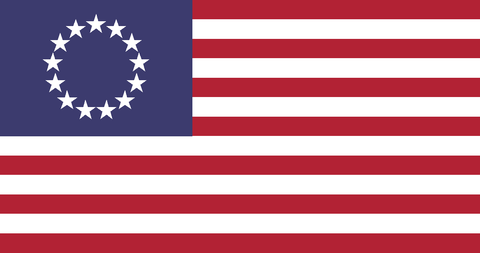

A Nation, not an economic zone.
Appalachian Vanguard is a grassroots effort to preserve our region's culture, protect its land, and give our communities a stronger voice in the decisions made about us and for us.
Who we are
We're a group of Heritage Americans who believe Appalachia and her culture is under attack from many fronts, and should be entirely protected.
We're currently an independent, volunteer-run effort. If all goes well, we intend to formalize as a nonprofit organization so we can support the region more directly — through events, advocacy, and resources for the communities we come from.
What we come from
Appalachia's story runs through coal camps and historical battlefields, and through generations who contributed unimaginable amounts to the nation, even before it existed. From the Revolution to the Civil War, people from our region are quite literally the "underdogs." Would America be the same had Virginia not existed?
It runs through music, too: old-time fiddle and banjo tunes carried over by Scots-Irish and English settlers, reshaped in these hollows into something distinctly ours, and passed down at church gatherings long before it had a name like "bluegrass." It runs through food — soup beans and cornbread, ramps in spring, canning in the fall — and through a storytelling tradition that treats a good tale as a form of currency.
Land & Place
Stewardship of the mountains, waterways, and working land that generations of our families have called home.
Tradition
Music, craft, dialect, and story — preserved as living practice, not museum pieces.
Our positions
Appalachian Vanguard takes positions on the issues that most directly affect our communities — from land protection, to cultural preservation, to even politics unfolding in Richmond and Washington.
We identify as a Right wing organization, but would passionately reject many of the policies pushed by the Right wing/Modern GOP today.
Gun Rights — We are entirely Pro-2A, with zero exceptions except for laws limiting non-citizens. We vehemently reject Spanberger's gun control bills, and what we see as her severely left wing authoritarianism and her government's efforts to spit on the Constitution.
Religion — We are a Christian organization and view it as both a building block for Western civilization and the United States. We believe America is a Christian nation. Christian belief isn't required for membership, but accepting that we want to spread the Gospel is.
Immigration — We believe strongly in a nation's ability to determine who enters the country, and believe both in immigration enforcement and drastically lowering the numbers of legal immigration, alongside the abolition of work visas.
Foreign Policy — Although we would hesitate to label ourselves as isolationist, we believe in a true America First foreign policy and in the Monroe Doctrine. We should focus on improving the lives of Americans before we try world policing with nations abroad, and we would support bills to prevent dual citizens from holding public office. We support ending all aid to Israel especially, and believe that AIPAC and its aggressive lobbying needs to be outlawed yesterday.
Trump — We support President Trump's tariff and general economic policies (mostly), but believe he is extremely weak on immigration and is NOT America First because of his submission to Israel. We would also hesitate to label President Trump a Christian.

Common questions
Is Appalachian Vanguard a registered nonprofit?
Where does Appalachian Vanguard operate?
How can I get involved?
Why doesn't Appalachian Vanguard name its members or leadership?
Is my email kept private if I contact you?
Can I donate?
Get in touch
Have a question, a story to share, or want to get involved? Reach out by email — we read everything.